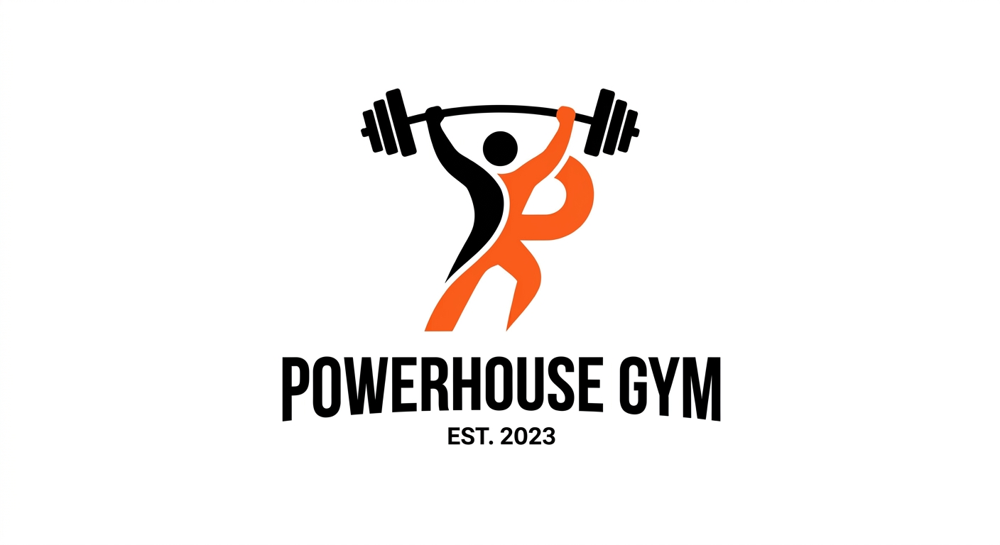
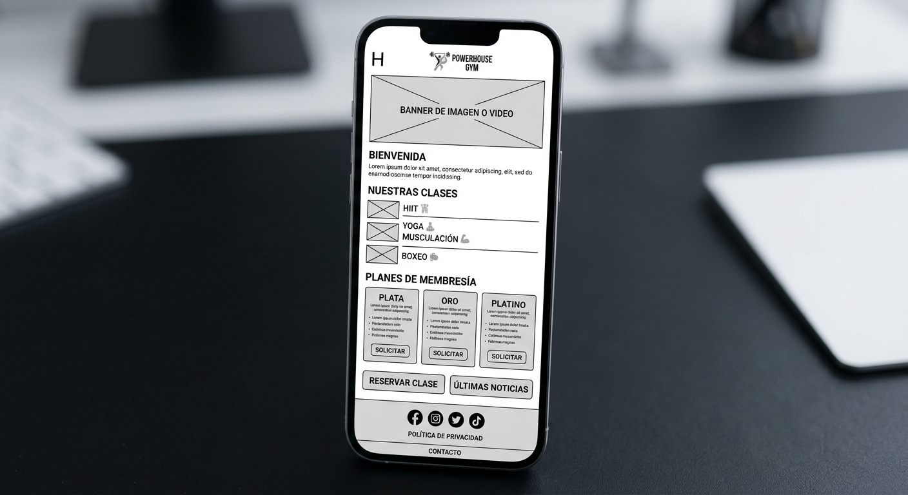
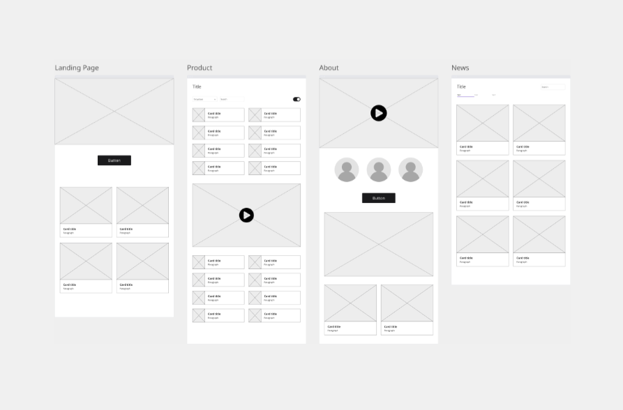

Site Name

Bay Area eBiking Club
Reason for Choice: This name represents an active regional community focused on electric biking in the San Francisco Bay Area. It is memorable, concise, and clearly communicates the purpose of the organization to prospective members.
Optional Domain Availability: bay-ebike.org
Site Purpose
The site provides a central hub for regional e-biking enthusiasts by offering curated trail guides, safety guidelines, and e-bike buying/maintenance recommendations. Additionally, it features dynamic community events and an online membership registration form.
Scenarios
- Scenario 1: What is the best e-bike model to buy for steep or mountainous trail areas?
- Scenario 2: Where can I find contact information for the club directors and join weekly group rides?
Color Schema
The site utilizes the following palette to convey an energetic outdoor theme while ensuring WCAG AA high contrast standards:
Typography
- Heading Font: Montserrat (Sans-serif) – Applied to headings (
h1,h2,h3) for a modern aesthetic. - Body Font: Roboto (Sans-serif) – Applied to body text, paragraphs, and list items for optimal legibility.
Wireframes
Visual representation of the home page layout in mobile and desktop viewports:
Mobile View

Desktop View
